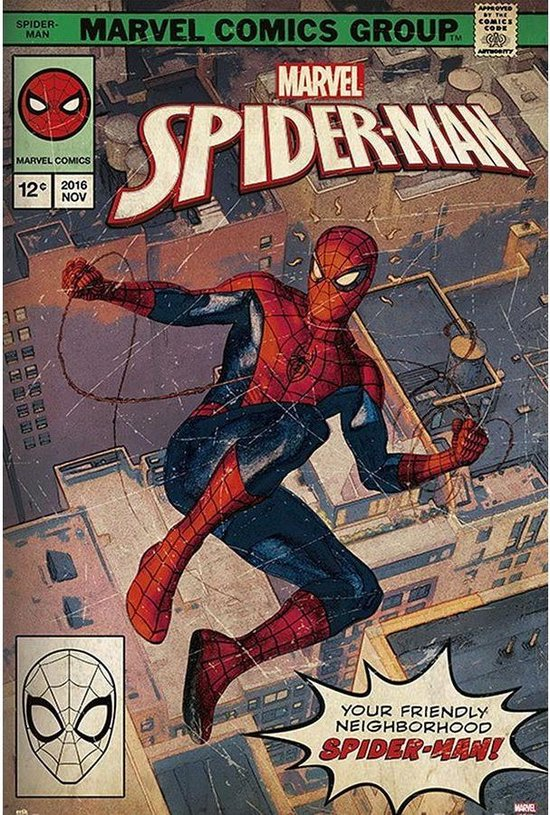
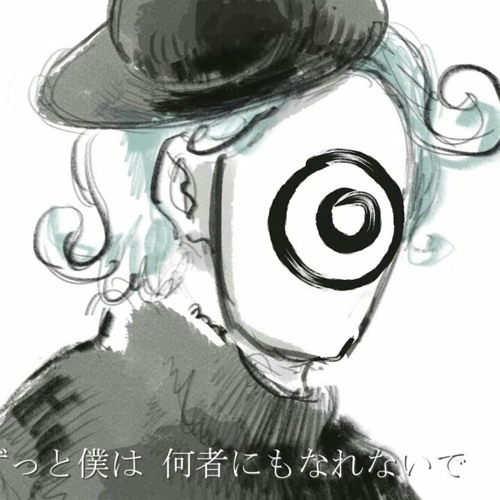

My main interests lie in computers and animation. But why?
Computers
I've always been intrigued by the way computers simplify and enhance various tasks, making them more accessible. The speed at which computers process information is equally fascinating—tasks that might consume hours for humans can be
executed within seconds by computers.
Animation
Animation is such an interesting medium to me. Having the possibility to make anything you want appear. It doesn't matter if it's real or not, the only limitation is your imagination, dedication and time. Another fascinating aspect of
animation lies in the diverse methods available for bringing it to life, whether through the utilization of images, drawings, clay, and more.
Here's a little overview of my most predominant hobbies.


Manga / Comics
There are so many good stories that aren't animated or well adapted. Reading those stories straight from the source just has a different feel to it.
Music has always played a huge role in my life.
I always listen to it, while traveling, gaming, working, etc.
I listen to a bunch of different genres but here are my favorites.
Reggaeton
Reggaeton, originating from Latin America, is a vibrant music genre blending hip-hop and Latin styles. With energetic beats and catchy rhythms, it's a global dance sensation, representing the pulse of urban celebration.
Bachata
Bachata, born in the Dominican Republic, is a captivating music and dance genre. Its soulful melodies and rhythmic guitar create an intimate, sensual dance. Exploring themes of love and life, bachata has evolved into a globally
cherished art form.


J-pop
J-pop, or Japanese pop music, is a vibrant genre known for its catchy tunes, diverse influences, and strong ties to anime and pop culture. It has gained global popularity for its unique and innovative musical landscape.